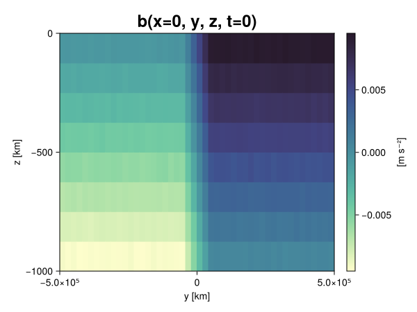
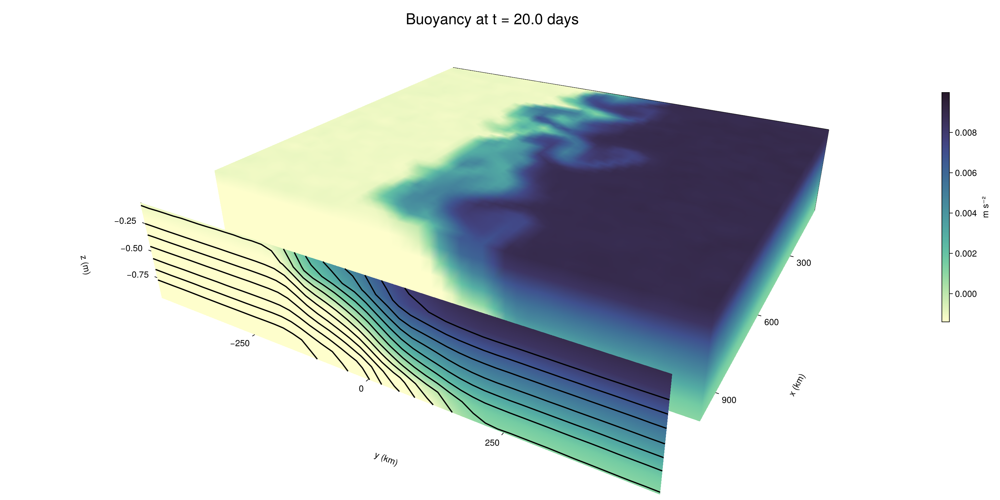

Baroclinic adjustment
In this example, we simulate the evolution and equilibration of a baroclinically unstable front.
Install dependencies
First let's make sure we have all required packages installed.
using Pkg
pkg"add Oceananigans, CairoMakie"using Oceananigans
using Oceananigans.UnitsGrid
We use a three-dimensional channel that is periodic in the x direction:
Lx = 1000kilometers # east-west extent [m]
Ly = 1000kilometers # north-south extent [m]
Lz = 1kilometers # depth [m]
grid = RectilinearGrid(size = (48, 48, 8),
x = (0, Lx),
y = (-Ly/2, Ly/2),
z = (-Lz, 0),
topology = (Periodic, Bounded, Bounded))48×48×8 RectilinearGrid{Float64, Periodic, Bounded, Bounded} on CPU with 3×3×3 halo
├── Periodic x ∈ [0.0, 1.0e6) regularly spaced with Δx=20833.3
├── Bounded y ∈ [-500000.0, 500000.0] regularly spaced with Δy=20833.3
└── Bounded z ∈ [-1000.0, 0.0] regularly spaced with Δz=125.0Model
We built a HydrostaticFreeSurfaceModel with an ImplicitFreeSurface solver. Regarding Coriolis, we use a beta-plane centered at 45° South.
model = HydrostaticFreeSurfaceModel(; grid,
coriolis = BetaPlane(latitude = -45),
buoyancy = BuoyancyTracer(),
tracers = :b,
momentum_advection = WENO(),
tracer_advection = WENO())HydrostaticFreeSurfaceModel{CPU, RectilinearGrid}(time = 0 seconds, iteration = 0)
├── grid: 48×48×8 RectilinearGrid{Float64, Periodic, Bounded, Bounded} on CPU with 3×3×3 halo
├── timestepper: QuasiAdamsBashforth2TimeStepper
├── tracers: b
├── closure: Nothing
├── buoyancy: BuoyancyTracer with ĝ = NegativeZDirection()
├── free surface: ImplicitFreeSurface with gravitational acceleration 9.80665 m s⁻²
│ └── solver: FFTImplicitFreeSurfaceSolver
├── advection scheme:
│ ├── momentum: WENO reconstruction order 5
│ └── b: WENO reconstruction order 5
└── coriolis: BetaPlane{Float64}We start our simulation from rest with a baroclinically unstable buoyancy distribution. We use ramp(y, Δy), defined below, to specify a front with width Δy and horizontal buoyancy gradient M². We impose the front on top of a vertical buoyancy gradient N² and a bit of noise.
"""
ramp(y, Δy)
Linear ramp from 0 to 1 between -Δy/2 and +Δy/2.
For example:
```
y < -Δy/2 => ramp = 0
-Δy/2 < y < -Δy/2 => ramp = y / Δy
y > Δy/2 => ramp = 1
```
"""
ramp(y, Δy) = min(max(0, y/Δy + 1/2), 1)
N² = 1e-5 # [s⁻²] buoyancy frequency / stratification
M² = 1e-7 # [s⁻²] horizontal buoyancy gradient
Δy = 100kilometers # width of the region of the front
Δb = Δy * M² # buoyancy jump associated with the front
ϵb = 1e-2 * Δb # noise amplitude
bᵢ(x, y, z) = N² * z + Δb * ramp(y, Δy) + ϵb * randn()
set!(model, b=bᵢ)Let's visualize the initial buoyancy distribution.
using CairoMakie
# Build coordinates with units of kilometers
x, y, z = 1e-3 .* nodes(grid, (Center(), Center(), Center()))
b = model.tracers.b
fig, ax, hm = heatmap(view(b, 1, :, :),
colormap = :deep,
axis = (xlabel = "y [km]",
ylabel = "z [km]",
title = "b(x=0, y, z, t=0)",
titlesize = 24))
Colorbar(fig[1, 2], hm, label = "[m s⁻²]")
fig
Simulation
Now let's build a Simulation.
simulation = Simulation(model, Δt=20minutes, stop_time=20days)Simulation of HydrostaticFreeSurfaceModel{CPU, RectilinearGrid}(time = 0 seconds, iteration = 0)
├── Next time step: 20 minutes
├── Elapsed wall time: 0 seconds
├── Wall time per iteration: NaN days
├── Stop time: 20 days
├── Stop iteration : Inf
├── Wall time limit: Inf
├── Callbacks: OrderedDict with 4 entries:
│ ├── stop_time_exceeded => Callback of stop_time_exceeded on IterationInterval(1)
│ ├── stop_iteration_exceeded => Callback of stop_iteration_exceeded on IterationInterval(1)
│ ├── wall_time_limit_exceeded => Callback of wall_time_limit_exceeded on IterationInterval(1)
│ └── nan_checker => Callback of NaNChecker for u on IterationInterval(100)
├── Output writers: OrderedDict with no entries
└── Diagnostics: OrderedDict with no entriesWe add a TimeStepWizard callback to adapt the simulation's time-step,
conjure_time_step_wizard!(simulation, IterationInterval(20), cfl=0.2, max_Δt=20minutes)Also, we add a callback to print a message about how the simulation is going,
using Printf
wall_clock = Ref(time_ns())
function print_progress(sim)
u, v, w = model.velocities
progress = 100 * (time(sim) / sim.stop_time)
elapsed = (time_ns() - wall_clock[]) / 1e9
@printf("[%05.2f%%] i: %d, t: %s, wall time: %s, max(u): (%6.3e, %6.3e, %6.3e) m/s, next Δt: %s\n",
progress, iteration(sim), prettytime(sim), prettytime(elapsed),
maximum(abs, u), maximum(abs, v), maximum(abs, w), prettytime(sim.Δt))
wall_clock[] = time_ns()
return nothing
end
add_callback!(simulation, print_progress, IterationInterval(100))Diagnostics/Output
Here, we save the buoyancy, $b$, at the edges of our domain as well as the zonal ($x$) average of buoyancy.
u, v, w = model.velocities
ζ = ∂x(v) - ∂y(u)
B = Average(b, dims=1)
U = Average(u, dims=1)
V = Average(v, dims=1)
filename = "baroclinic_adjustment"
save_fields_interval = 0.5day
slicers = (east = (grid.Nx, :, :),
north = (:, grid.Ny, :),
bottom = (:, :, 1),
top = (:, :, grid.Nz))
for side in keys(slicers)
indices = slicers[side]
simulation.output_writers[side] = JLD2OutputWriter(model, (; b, ζ);
filename = filename * "_$(side)_slice",
schedule = TimeInterval(save_fields_interval),
overwrite_existing = true,
indices)
end
simulation.output_writers[:zonal] = JLD2OutputWriter(model, (; b=B, u=U, v=V);
filename = filename * "_zonal_average",
schedule = TimeInterval(save_fields_interval),
overwrite_existing = true)JLD2OutputWriter scheduled on TimeInterval(12 hours):
├── filepath: ./baroclinic_adjustment_zonal_average.jld2
├── 3 outputs: (b, u, v)
├── array type: Array{Float64}
├── including: [:grid, :coriolis, :buoyancy, :closure]
├── file_splitting: NoFileSplitting
└── file size: 30.7 KiBNow we're ready to run.
@info "Running the simulation..."
run!(simulation)
@info "Simulation completed in " * prettytime(simulation.run_wall_time)[ Info: Running the simulation...
[ Info: Initializing simulation...
[00.00%] i: 0, t: 0 seconds, wall time: 21.318 seconds, max(u): (0.000e+00, 0.000e+00, 0.000e+00) m/s, next Δt: 20 minutes
[ Info: ... simulation initialization complete (23.433 seconds)
[ Info: Executing initial time step...
[ Info: ... initial time step complete (17.891 seconds).
[06.94%] i: 100, t: 1.389 days, wall time: 32.876 seconds, max(u): (1.295e-01, 1.230e-01, 1.495e-03) m/s, next Δt: 20 minutes
[13.89%] i: 200, t: 2.778 days, wall time: 912.276 ms, max(u): (2.142e-01, 1.919e-01, 1.906e-03) m/s, next Δt: 20 minutes
[20.83%] i: 300, t: 4.167 days, wall time: 805.682 ms, max(u): (2.852e-01, 2.280e-01, 1.783e-03) m/s, next Δt: 20 minutes
[27.78%] i: 400, t: 5.556 days, wall time: 897.169 ms, max(u): (3.528e-01, 2.921e-01, 1.684e-03) m/s, next Δt: 20 minutes
[34.72%] i: 500, t: 6.944 days, wall time: 911.358 ms, max(u): (4.148e-01, 3.532e-01, 1.837e-03) m/s, next Δt: 20 minutes
[41.67%] i: 600, t: 8.333 days, wall time: 853.064 ms, max(u): (5.377e-01, 5.205e-01, 2.143e-03) m/s, next Δt: 20 minutes
[48.61%] i: 700, t: 9.722 days, wall time: 881.574 ms, max(u): (6.844e-01, 8.395e-01, 3.425e-03) m/s, next Δt: 20 minutes
[55.56%] i: 800, t: 11.111 days, wall time: 797.703 ms, max(u): (9.588e-01, 1.134e+00, 4.057e-03) m/s, next Δt: 20 minutes
[62.50%] i: 900, t: 12.500 days, wall time: 854.621 ms, max(u): (1.298e+00, 1.256e+00, 5.146e-03) m/s, next Δt: 20 minutes
[69.44%] i: 1000, t: 13.889 days, wall time: 829.645 ms, max(u): (1.318e+00, 1.188e+00, 4.814e-03) m/s, next Δt: 20 minutes
[76.39%] i: 1100, t: 15.278 days, wall time: 753.444 ms, max(u): (1.359e+00, 1.032e+00, 3.701e-03) m/s, next Δt: 20 minutes
[83.33%] i: 1200, t: 16.667 days, wall time: 718.418 ms, max(u): (1.361e+00, 9.924e-01, 2.815e-03) m/s, next Δt: 20 minutes
[90.28%] i: 1300, t: 18.056 days, wall time: 789.487 ms, max(u): (1.270e+00, 1.073e+00, 2.454e-03) m/s, next Δt: 20 minutes
[97.22%] i: 1400, t: 19.444 days, wall time: 803.888 ms, max(u): (1.235e+00, 1.201e+00, 2.982e-03) m/s, next Δt: 20 minutes
[ Info: Simulation is stopping after running for 56.457 seconds.
[ Info: Simulation time 20 days equals or exceeds stop time 20 days.
[ Info: Simulation completed in 56.488 seconds
Visualization
All that's left is to make a pretty movie. Actually, we make two visualizations here. First, we illustrate how to make a 3D visualization with Makie's Axis3 and Makie.surface. Then we make a movie in 2D. We use CairoMakie in this example, but note that using GLMakie is more convenient on a system with OpenGL, as figures will be displayed on the screen.
using CairoMakieThree-dimensional visualization
We load the saved buoyancy output on the top, north, and east surface as FieldTimeSerieses.
filename = "baroclinic_adjustment"
sides = keys(slicers)
slice_filenames = NamedTuple(side => filename * "_$(side)_slice.jld2" for side in sides)
b_timeserieses = (east = FieldTimeSeries(slice_filenames.east, "b"),
north = FieldTimeSeries(slice_filenames.north, "b"),
top = FieldTimeSeries(slice_filenames.top, "b"))
B_timeseries = FieldTimeSeries(filename * "_zonal_average.jld2", "b")
times = B_timeseries.times
grid = B_timeseries.grid48×48×8 RectilinearGrid{Float64, Periodic, Bounded, Bounded} on CPU with 3×3×3 halo
├── Periodic x ∈ [0.0, 1.0e6) regularly spaced with Δx=20833.3
├── Bounded y ∈ [-500000.0, 500000.0] regularly spaced with Δy=20833.3
└── Bounded z ∈ [-1000.0, 0.0] regularly spaced with Δz=125.0We build the coordinates. We rescale horizontal coordinates to kilometers.
xb, yb, zb = nodes(b_timeserieses.east)
xb = xb ./ 1e3 # convert m -> km
yb = yb ./ 1e3 # convert m -> km
Nx, Ny, Nz = size(grid)
x_xz = repeat(x, 1, Nz)
y_xz_north = y[end] * ones(Nx, Nz)
z_xz = repeat(reshape(z, 1, Nz), Nx, 1)
x_yz_east = x[end] * ones(Ny, Nz)
y_yz = repeat(y, 1, Nz)
z_yz = repeat(reshape(z, 1, Nz), grid.Ny, 1)
x_xy = x
y_xy = y
z_xy_top = z[end] * ones(grid.Nx, grid.Ny)Then we create a 3D axis. We use zonal_slice_displacement to control where the plot of the instantaneous zonal average flow is located.
fig = Figure(size = (1600, 800))
zonal_slice_displacement = 1.2
ax = Axis3(fig[2, 1],
aspect=(1, 1, 1/5),
xlabel = "x (km)",
ylabel = "y (km)",
zlabel = "z (m)",
xlabeloffset = 100,
ylabeloffset = 100,
zlabeloffset = 100,
limits = ((x[1], zonal_slice_displacement * x[end]), (y[1], y[end]), (z[1], z[end])),
elevation = 0.45,
azimuth = 6.8,
xspinesvisible = false,
zgridvisible = false,
protrusions = 40,
perspectiveness = 0.7)Axis3()We use data from the final savepoint for the 3D plot. Note that this plot can easily be animated by using Makie's Observable. To dive into Observables, check out Makie.jl's Documentation.
n = length(times)41Now let's make a 3D plot of the buoyancy and in front of it we'll use the zonally-averaged output to plot the instantaneous zonal-average of the buoyancy.
b_slices = (east = interior(b_timeserieses.east[n], 1, :, :),
north = interior(b_timeserieses.north[n], :, 1, :),
top = interior(b_timeserieses.top[n], :, :, 1))
# Zonally-averaged buoyancy
B = interior(B_timeseries[n], 1, :, :)
clims = 1.1 .* extrema(b_timeserieses.top[n][:])
kwargs = (colorrange=clims, colormap=:deep, shading=NoShading)
surface!(ax, x_yz_east, y_yz, z_yz; color = b_slices.east, kwargs...)
surface!(ax, x_xz, y_xz_north, z_xz; color = b_slices.north, kwargs...)
surface!(ax, x_xy, y_xy, z_xy_top; color = b_slices.top, kwargs...)
sf = surface!(ax, zonal_slice_displacement .* x_yz_east, y_yz, z_yz; color = B, kwargs...)
contour!(ax, y, z, B; transformation = (:yz, zonal_slice_displacement * x[end]),
levels = 15, linewidth = 2, color = :black)
Colorbar(fig[2, 2], sf, label = "m s⁻²", height = Relative(0.4), tellheight=false)
title = "Buoyancy at t = " * string(round(times[n] / day, digits=1)) * " days"
fig[1, 1:2] = Label(fig, title; fontsize = 24, tellwidth = false, padding = (0, 0, -120, 0))
rowgap!(fig.layout, 1, Relative(-0.2))
colgap!(fig.layout, 1, Relative(-0.1))
save("baroclinic_adjustment_3d.png", fig)
Two-dimensional movie
We make a 2D movie that shows buoyancy $b$ and vertical vorticity $ζ$ at the surface, as well as the zonally-averaged zonal and meridional velocities $U$ and $V$ in the $(y, z)$ plane. First we load the FieldTimeSeries and extract the additional coordinates we'll need for plotting
ζ_timeseries = FieldTimeSeries(slice_filenames.top, "ζ")
U_timeseries = FieldTimeSeries(filename * "_zonal_average.jld2", "u")
B_timeseries = FieldTimeSeries(filename * "_zonal_average.jld2", "b")
V_timeseries = FieldTimeSeries(filename * "_zonal_average.jld2", "v")
xζ, yζ, zζ = nodes(ζ_timeseries)
yv = ynodes(V_timeseries)
xζ = xζ ./ 1e3 # convert m -> km
yζ = yζ ./ 1e3 # convert m -> km
yv = yv ./ 1e3 # convert m -> km49-element Vector{Float64}:
-500.0
-479.1666666666667
-458.3333333333333
-437.5
-416.6666666666667
-395.8333333333333
-375.0
-354.1666666666667
-333.3333333333333
-312.5
-291.6666666666667
-270.8333333333333
-250.0
-229.16666666666666
-208.33333333333334
-187.5
-166.66666666666666
-145.83333333333334
-125.0
-104.16666666666667
-83.33333333333333
-62.5
-41.666666666666664
-20.833333333333332
0.0
20.833333333333332
41.666666666666664
62.5
83.33333333333333
104.16666666666667
125.0
145.83333333333334
166.66666666666666
187.5
208.33333333333334
229.16666666666666
250.0
270.8333333333333
291.6666666666667
312.5
333.3333333333333
354.1666666666667
375.0
395.8333333333333
416.6666666666667
437.5
458.3333333333333
479.1666666666667
500.0Next, we set up a plot with 4 panels. The top panels are large and square, while the bottom panels get a reduced aspect ratio through rowsize!.
set_theme!(Theme(fontsize=24))
fig = Figure(size=(1800, 1000))
axb = Axis(fig[1, 2], xlabel="x (km)", ylabel="y (km)", aspect=1)
axζ = Axis(fig[1, 3], xlabel="x (km)", ylabel="y (km)", aspect=1, yaxisposition=:right)
axu = Axis(fig[2, 2], xlabel="y (km)", ylabel="z (m)")
axv = Axis(fig[2, 3], xlabel="y (km)", ylabel="z (m)", yaxisposition=:right)
rowsize!(fig.layout, 2, Relative(0.3))To prepare a plot for animation, we index the timeseries with an Observable,
n = Observable(1)
b_top = @lift interior(b_timeserieses.top[$n], :, :, 1)
ζ_top = @lift interior(ζ_timeseries[$n], :, :, 1)
U = @lift interior(U_timeseries[$n], 1, :, :)
V = @lift interior(V_timeseries[$n], 1, :, :)
B = @lift interior(B_timeseries[$n], 1, :, :)Observable([-0.009391676967375195 -0.008131092175769813 -0.006879402069800193 -0.005623055767055543 -0.004358387685396823 -0.003117944950545832 -0.0019030559534931057 -0.0006250577922366022; -0.009353580276572555 -0.008133146152792679 -0.0068806629911837384 -0.005606644074050063 -0.004356470716710845 -0.003132062292552593 -0.001897931923625257 -0.0006156259113796668; -0.00939450250751572 -0.00812855124887218 -0.006853176373185936 -0.005592296312885152 -0.004351249902352724 -0.0031277249245421634 -0.0018757242109793567 -0.0006136218213746192; -0.009392311064237083 -0.008123178459321409 -0.006885501089702099 -0.005616928446655457 -0.0043701279883493266 -0.003118541404602271 -0.001883104544233135 -0.0006201678435093399; -0.00937312779657329 -0.008132437643449236 -0.006858955884085016 -0.005625576092786498 -0.004360748747494876 -0.003124226369476042 -0.0018753923596622564 -0.0006206454664530363; -0.00937667304798874 -0.008125957679855545 -0.006884354286647893 -0.005622242228400295 -0.004379819543868076 -0.0031382710220257295 -0.0018573923039364485 -0.0006359460962476448; -0.00936120912768363 -0.008116556129967088 -0.006853787604509882 -0.005610060402016462 -0.004381546009634767 -0.0030943687687537635 -0.0018889814245361444 -0.0006377358843194327; -0.009384879365897741 -0.008122923926019246 -0.006874665674054363 -0.0056280574764123945 -0.004363440140146834 -0.003127137145695279 -0.0018472007447782577 -0.0006301590004609822; -0.009368575057888575 -0.008112809685471484 -0.006872339586368906 -0.005649194041871144 -0.004387539210004951 -0.003121454268450731 -0.0018755160131820742 -0.0006317796297209175; -0.009376145185296917 -0.008117572979834243 -0.006866168416932266 -0.005616331297113222 -0.004376300145126239 -0.003128984682987833 -0.0018740327245164712 -0.000660404313661727; -0.009358438097390974 -0.008128133867492504 -0.00685291858777062 -0.005622205337665703 -0.004376931021924435 -0.0031430361635275614 -0.001893541345345146 -0.0006354312503841739; -0.009401867749066381 -0.00814410512906079 -0.006839157689005178 -0.005648539312530984 -0.00438283113959765 -0.0031288082676393376 -0.001882191467384433 -0.0006430335557159002; -0.009364095707768872 -0.008114344961011023 -0.0068666954157682045 -0.0056152303904351995 -0.004388247076495221 -0.0031229365759306207 -0.0018619072002053014 -0.0006132814719163377; -0.00936546097192356 -0.008134503311391495 -0.006865043219742922 -0.005652527378457349 -0.004365210307999825 -0.0031446881516068045 -0.0018785278600224667 -0.0006371731242495526; -0.00936660285030645 -0.008140637889551145 -0.00689058005899652 -0.0056442780532008395 -0.004364942855022455 -0.003142682549405605 -0.0018770055460419785 -0.0006040775182241317; -0.009371882013334368 -0.008137786712944952 -0.0068762049818744805 -0.005608919035603527 -0.004389014140847223 -0.003137672524739723 -0.0018555827758065808 -0.0006193165736710675; -0.009363669065258451 -0.008144697116327121 -0.006881173186399091 -0.0056335042967244455 -0.004373241284920236 -0.0031602741259278717 -0.0018604140455405736 -0.0006164470853059614; -0.009360638507543368 -0.008138403234289592 -0.006870229977348887 -0.0056438110962200765 -0.004396020559241989 -0.003130807188697166 -0.0018917337837540636 -0.0006379412290511593; -0.009373423144082405 -0.008110416573637527 -0.006877949283487203 -0.005614503032770141 -0.004390172692624306 -0.003124169209478713 -0.0018588973087054232 -0.000639026534932717; -0.009391955965875443 -0.008138341115437943 -0.006889669546914224 -0.005641349619190487 -0.004392347998107582 -0.003107602861050047 -0.0019005992626724508 -0.000607284452496104; -0.00939474436279631 -0.008103394967435 -0.006873623831930044 -0.005603067709486477 -0.004366454024820964 -0.00312874604990371 -0.001851365696854481 -0.0005808670643952485; -0.009366445676002392 -0.008128726702197473 -0.006868116125403306 -0.005606384371523695 -0.004367245613345453 -0.003152715928365673 -0.0018798368750370029 -0.0006204859952672379; -0.007512631093218504 -0.006224796794391402 -0.004997399190717611 -0.0037714141870992548 -0.0024997230182741575 -0.0012574418763880528 -5.0565345781050825e-6 0.0012285411339297558; -0.005434381858018848 -0.004180856152360967 -0.0028882126754228264 -0.0016659951789128801 -0.00044576419718448827 0.0008324798765037793 0.0020808539297248476 0.0033465380539659004; -0.0033204181559658486 -0.002063755721630452 -0.0008341681746800884 0.000402332654848466 0.0016765805304843487 0.0029314160271293552 0.004165412487493873 0.0054370034804201136; -0.0012398490727142915 -2.2674074997892618e-5 0.001257854287126493 0.002515101232705354 0.0037556508781833643 0.004998165078188564 0.006212916282323189 0.007506164860786847; 0.0006157571645758673 0.0018732418644235008 0.003125421627127069 0.004364923622427471 0.005615330835517705 0.006892678787013176 0.00813749547918294 0.0093936516951459; 0.0006195511262247427 0.0018959489442720602 0.0031196176632119605 0.004375318788068241 0.005604768260142949 0.006884536461205873 0.008121705932644654 0.009368523835405108; 0.0006202034158823241 0.0018910803121097407 0.003106217248388075 0.0044057528124714015 0.005595611080064536 0.006860407824547693 0.008137613011471806 0.009361956423115507; 0.0006286687206613409 0.0018825434265419877 0.0031161212933170147 0.004390800963772481 0.005619178000409276 0.006853751980706924 0.00812325361173563 0.009400429471824026; 0.0006229698206304445 0.0018916887499994784 0.0031226625683995844 0.004368016106582971 0.005626589520569703 0.006850733383091708 0.008082848923035355 0.00936555709811249; 0.0006357111213789356 0.001871054691386949 0.0031567972901617642 0.004358912941371792 0.005635416341395466 0.006886806326200996 0.008106190847651603 0.009360215173888594; 0.0006149232719546554 0.0018663654357643146 0.0031058980037767686 0.004371974019730958 0.005635092178685029 0.0068612880681756805 0.00810272673977148 0.009359028292914797; 0.0006254773099081589 0.0018779260816469863 0.0031397527212395798 0.004355844919950574 0.0056437392954945395 0.00688462352058788 0.008114297371248648 0.00936264856939579; 0.0006300107056110273 0.001868797115204721 0.003123974041667754 0.004393467070850947 0.005635931652830172 0.00687984578032533 0.008127971037295142 0.009355733083874778; 0.0006198977368216482 0.001860160806442685 0.0031487978978165625 0.004361308359313574 0.005633749269170165 0.006876848718721071 0.00814407117480594 0.009387494842505981; 0.0006123821735957853 0.0018806447768793088 0.0031416361334389163 0.004384085726884131 0.005643677663042412 0.006867399922324695 0.008118290523113518 0.009367447472377683; 0.0006279828192864157 0.0018553171789223364 0.0031417720746352348 0.004364179685088214 0.005621682339197882 0.006873640942280605 0.008115082330795968 0.009363562903344601; 0.0006398033169677814 0.0018520380473769575 0.0031148356125194412 0.004380277837763257 0.005633106454630538 0.006879135511826638 0.00813847645627619 0.009363807367170345; 0.0005977074622304036 0.0018679599735795752 0.0031324666920593664 0.004365894287112524 0.005634520007606101 0.006882791514796464 0.008093658048653944 0.009366048580977372; 0.0006171611533783121 0.00187751370674878 0.003114638653577633 0.004370566661254284 0.005621001799107755 0.006896543000673712 0.008116067808885272 0.009376876310927824; 0.0006205615933655814 0.0019104064111357894 0.0031237217216143792 0.004380503426747971 0.005627353185149539 0.0068840802225498265 0.008131474538628546 0.009357997221594179; 0.0006215298443647945 0.0018532387410644807 0.0031035628458024197 0.004367583452003329 0.005617060480709442 0.00688537947573509 0.00813701650216045 0.00937402020945209; 0.0006169416520521918 0.0018595455864570726 0.003108018013299472 0.004365071771391948 0.005617758160752409 0.006881773738794808 0.008143713706982457 0.009379118396068658; 0.0006307574353705076 0.0018982202664461609 0.00314647028665559 0.004359722255345793 0.005619378658697378 0.006871931885584791 0.00814730276624671 0.009369309296272284; 0.0006046581241248938 0.001884925471676651 0.0031160499037641495 0.004362272213588822 0.005615723748078505 0.006883276359244705 0.008120013979613988 0.009385767435143808; 0.0006194072364454229 0.0018653356633680492 0.0031324805397573764 0.004383460638324535 0.005630170226973372 0.0068832543521611745 0.008109644522579375 0.009390085349596065; 0.0006265075445675145 0.0018753057521847562 0.0030974628404064966 0.004368323094209246 0.005613514550248351 0.006867839857792316 0.008124039601746867 0.009375061290109017])
and then build our plot:
hm = heatmap!(axb, xb, yb, b_top, colorrange=(0, Δb), colormap=:thermal)
Colorbar(fig[1, 1], hm, flipaxis=false, label="Surface b(x, y) (m s⁻²)")
hm = heatmap!(axζ, xζ, yζ, ζ_top, colorrange=(-5e-5, 5e-5), colormap=:balance)
Colorbar(fig[1, 4], hm, label="Surface ζ(x, y) (s⁻¹)")
hm = heatmap!(axu, yb, zb, U; colorrange=(-5e-1, 5e-1), colormap=:balance)
Colorbar(fig[2, 1], hm, flipaxis=false, label="Zonally-averaged U(y, z) (m s⁻¹)")
contour!(axu, yb, zb, B; levels=15, color=:black)
hm = heatmap!(axv, yv, zb, V; colorrange=(-1e-1, 1e-1), colormap=:balance)
Colorbar(fig[2, 4], hm, label="Zonally-averaged V(y, z) (m s⁻¹)")
contour!(axv, yb, zb, B; levels=15, color=:black)Finally, we're ready to record the movie.
frames = 1:length(times)
record(fig, filename * ".mp4", frames, framerate=8) do i
n[] = i
endThis page was generated using Literate.jl.